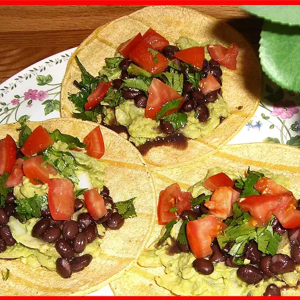

Avacado Tacos

Description
Soft taco shells stuffed with avacado, cilantro, fresh cut tomoatoes,
and sour cream
Ingredients
3 avocados mashed
1/4 cup onions, diced
1/4 teaspoon garlic salt
12 corn tortillas
1 bunch fresh cilantro leaves, finely chopped
jalapeno pepper sauce, to taste
steps
- Preheat oven to 325 degrees F (165 degrees C).
- In a medium bowl, mix avocados, onions, and garlic salt
- Arrange corn tortillas in a single layer on a large baking sheet, and place in the preheated oven 2 to 5 minutes, until heated through.
- Spread tortillas with the avocado mixture. Garnish with cilantro and sprinkle with jalapeno pepper sauce.